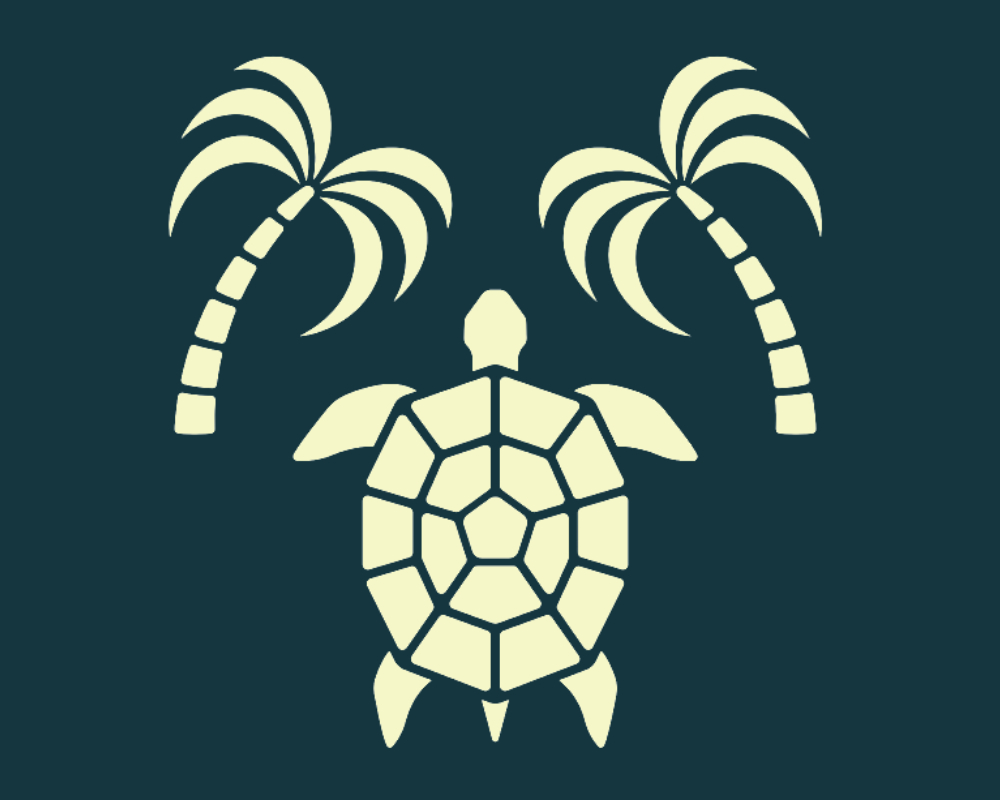

Home
Introduce
My Project
Guest Book
거북이처럼 단단하고 성실하게 끝까지 가는 Front-end Developer 박은영 입니다.
꾸준함의 힘을 알고 있습니다. '1 DAY 1 COMMIT' 을 생활화 하려고 노력합니다.
끝까지 도달해야 과정이 빛을 발한다는 것을 믿습니다.
도전과 시도를 발판삼아 변화를 즐기는 중입니다.
꼼꼼함이 저를 더 단단하게 만들어줍니다.
칠전팔기, 넘어지고 일어서기를 즐기는 좀비같은 개발자 입니다.